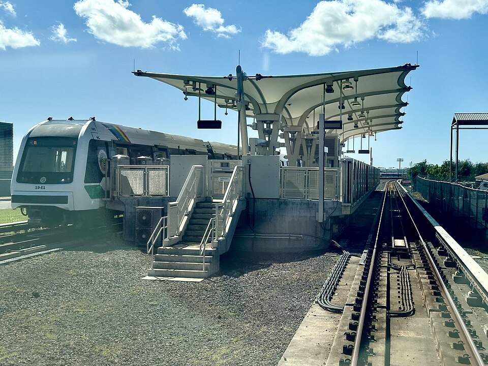

Hālaulani Rail Station
Place: Hālaulani Rail Station, Leeward Community College, Pearl City, Oʻahu
Type: Skyline rail station / college station
Namesake: Hālaulani (“heavenly hālau” or “chief's house”), a historic ʻili within the ahupuaʻa of Waipiʻo
Story it tells: How a modern rail station preserves the name of a Waipiʻo landscape once defined by fishponds, fishing, and sacred sites before sugar plantations and the development of Leeward Community College transformed the land.

Hālaulani Rail Station stands on the grounds of Leeward Community College in Pearl City, near the shoreline of Puʻuloa (Pearl Harbor). Unlike the elevated stations throughout Skyline, Hālaulani sits at ground level, with passengers walking through the station using an underground pedestrian passage. It opened on June 30, 2023, as part of Skyline's first operating segment.
Hālaulani is the name of a historic ʻili within the larger ahupuaʻa of Waipiʻo. The name has been translated as “heavenly hālau” or “chief's house,” connecting today's college and rail station with a much older division of the land.
Before educational facilities dominated this area, Hālaulani belonged to a remarkably productive landscape along Puʻuloa. Nearby were the large fishponds of Hanaloa, ʻEō, and Hanapouli, part of an extensive system of Hawaiian aquaculture around the harbor. These loko iʻa supported ʻanae, or mullet, and other fish that helped sustain the communities of Waipiʻo.
Hālaulani was also connected with Ahuʻena Heiau, an important religious site. Historical surveys placed Ahuʻena within the ʻili of Hālaulani, close to the lands that would eventually become Leeward Community College.
Ahuʻena was closely connected with the surrounding fishing landscape. Historical accounts identify the site as a kūʻula of Waipiʻo, a sacred place associated with fishing and the rituals intended to ensure abundance from the nearby waters.
The heiau also survived into the era of Kamehameha I. Traditions describe changes in its religious function as Oʻahu passed through warfare, famine, and eventually Kamehameha's conquest of the island. The name Ahuʻena would later also become associated with Kamehameha's royal compound at Kamakahonu in Kailua-Kona, where another Ahuʻena Heiau became one of the most important sites of his final years.
The older landscape surrounding Hālaulani gradually disappeared as plantation agriculture started dominating Waipiʻo. By the late nineteenth and early twentieth centuries, sugarcane occupied much of the flat land surrounding Puʻuloa. The Oahu Sugar Company developed fields across the region, while the Oʻahu Railway & Land Company carried sugar, freight, workers, and passengers across the plains near the coast.
Plantation agriculture took a heavy toll on older Hawaiian sites. By the time archaeologists documented Ahuʻena Heiau during the twentieth century, the site was heavily disturbed and little of the original structure remained. The fishpond landscape along Puʻuloa was also altered by changing land use and development.
A major new chapter began in the 1960s when former agricultural land was selected for a new community college serving Leeward Oʻahu. Leeward Community College opened in 1968, replacing sugarcane with classrooms, workshops, parking lots, and other educational facilities. A landscape that had supported Hawaiian aquaculture and sacred sites, and later plantation agriculture, became a place devoted to higher education.
More than fifty years later, another major piece of public infrastructure arrived on the campus. During development of Honolulu's rail system, the traditional name Hālaulani was selected for the station serving Leeward Community College, reconnecting the modern campus with the ʻili upon which it was built.
The station's public art makes that connection especially visible. He Kauhulu ʻAnae (A Gathering of Mullets), a sculpture by Donald Lipski suspended above the station entrance, depicts a school of ʻanae. The fish recall the productive loko iʻa that once surrounded Hālaulani and turn the entrance to a modern rail station into a reminder of the landscape that existed here before the college.
Today, students arrive at Leeward Community College aboard a driverless train, passing beneath a gathering of fish that recalls the aquaculture of ancient Waipiʻo. Nearby, little remains visible of Ahuʻena Heiau or the extensive fishpond system that once defined this shoreline.
Hālaulani preserves their place on the landscape.